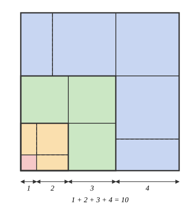
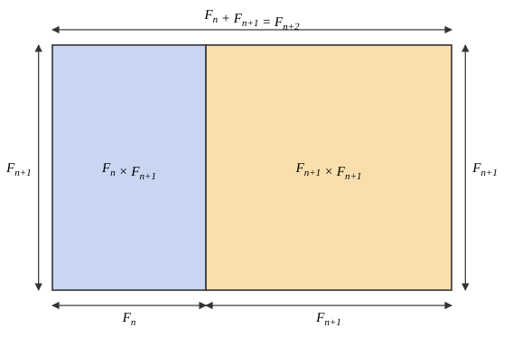

math4802 - mathematical problem solving
Worked solutions to problems from MATH4802. Problems are labelled by difficulty, i.e green circle (easiest), blue square, black diamond.
induction
green circle, 1
Show that 1^3 + 2^3 + \ldots + n^3 = (1 + 2 + \ldots + n)^2, algebraically and with a picture.
To telescope, we write 4k = (k+1)^2 - (k-1)^2, yielding
For a picture proof, we decompose a 1 + 2 + \ldots + n sided square tile into the following stripe pattern:

The area of the k-th stripe is composed of k tiles of side length k, meaning the total area of (1 + 2 + \ldots + n)^2 can be written as \sum_{k = 1}^{n} k \cdot k^2 = \sum_{k = 1}^{n}k^3 as required.
green circle, 3
Let F_n denote the Fibonacci numbers. Show that F_1 + F_2 + \ldots + F_n = F_{n+2} - 1, and that F_1^2 + F_2^2 + \ldots + F_n^2 = F_n F_{n+1}.
(a) F_1 + \ldots + F_n = F_{n+2} - 1
We prove this inductively. For n = 1,
Now, assume this is true for 1 \leq k \leq n, where k, n are integers. Then, we have
Therefore, by strong induction, the statement is true.
(b) F_1^2 + \ldots + F_n^2 = F_n F_{n+1}
Base case: F_1^2 = 1^2 = 1 \cdot 1 = F_1 F_2.
Inductive step: assume true for 1 \leq k \leq n, n, k integers. Then,
Picture proof of the inductive step (can also fill in recursively till F_0):

green circle, 4
Show that every integer n \geq 8 can be written as 3a + 5b for non-negative integers a, b. What is the largest integer that cannot be written as 4a + 7b for non-negative integers a, b?
Base case: 8 = 3 + 5, 9 = 3(3), 10 = 2(5).
Inductive step: assume true for all integers k where 8 \leq k \leq n - 1 for some integer n > 10. Since n > 10, n - 3 \geq 8, meaning n - 3 lies within the range of the inductive hypothesis.
Then,
Thus, every integer n \geq 8 can be written in such a form.
To find the largest integer that cannot be expressed as 4a + 7b for a, b non-negative, notice that if we have a series of 4 consecutive integers that can be expressed in this form, all subsequent integers can be expressed in this form via similar inductive reasoning.
Let k + 1, k + 2, \ldots, k + 4 denote the smallest k for which k + 1, \ldots, k + 4 can be written in this form. Then, since k is the smallest such integer, k cannot be written in this form (otherwise k, k + 1, \ldots, k + 3 would be a lesser contiguous streak). Every integer n \geq k + 1 can be expressed as 4a + 7b for non-negative integers a, b, meaning k must necessarily be the largest integer that cannot be written in that form.
In increasing order, integers that can be expressed in such a form are
blue square, 6
Show that \displaystyle\prod_{r = 1}^{n} \dfrac{2r - 1}{2r} \leq \dfrac{1}{\sqrt{3n + 1}} for all n \geq 1. For which m does the same inductive argument go through with 3n + 1 replaced by mn + 1?
We proceed via induction. For n = 1,
Let us assume the statement is true for n = k \geq 1, for integer k. Then,
Assume for the sake of contradiction that
Trying (*) with different coefficients, we get
balanced ternary
Show that every integer N has a unique representation N = \sum_{i \geq 0} \epsilon_i 3^i, where each \epsilon_i \in \{-1, 0, 1\} and only finitely many \epsilon_i are non-zero.
We prove that every integer has such a representation, and that such a representation is unique. We prove this via induction. Base case: N = 0 has a unique representation given by \epsilon_i = 0.
Assume that all integers 0 \leq k \leq N - 1 have a unique representation of that form, for some integer N. Let n_0 = N \bmod 3.
-
If n_0 = 2, then 0 \leq \dfrac{N + 1}{3} \leq N - 1 since N \geq 2, and thus \dfrac{N + 1}{3} \in \mathbb Z is in the range of our inductive hypothesis. Thus,
\dfrac{N + 1}{3} = \sum_{i \geq 0} \epsilon_i 3^{i} \Rightarrow N = -1 + \sum_{i \geq 1}\epsilon_{i - 1} 3^{i} = \sum_{i \geq 0} \delta_i 3^i,where \delta_0 = -1, \delta_k = \epsilon_{k - 1} for all k > 0. -
Otherwise, if n_0 \in \{0, 1\}, then 0 \leq \lfloor N/3 \rfloor \leq N - 1, where \lfloor N/3 \rfloor = (N - n_0)/3. Thus, we have
\dfrac{N - n_0}{3} = \sum_{i \geq 0}\epsilon_i 3^i,meaningN = n_0 + \sum_{i \geq 1}\epsilon_{i - 1}3^i = \sum_{i \geq 0} \delta_i 3^i,where \delta_0 = n_0, \delta_i = \epsilon_{i - 1} for i > 0.
In either case, we can write N in the required form, meaning such a representation exists. Conversely, assume that such a representation is not unique.
-
For n_0 = 2, this means we have two distinct representations
\sum_{i \geq 0} \alpha_i 3^i, \qquad \sum_{i \geq 0} \beta_i 3^i,where at least one \alpha_k \neq \beta_k. Since N \equiv 2 \bmod 3, \alpha_0 = \beta_0 = -1. Then,(N + 1)/3 = \sum_{i \geq 0} \alpha_{i + 1} 3^{i} = \sum_{i \geq 0} \beta_{i + 1}3^{i}.Since (N + 1)/3 must have a unique representation, \alpha_k = \beta_k for all k \geq 1, and we already have \alpha_0 = \beta_0. This contradicts our assumption, meaning N has a unique representation. -
Similarly, for n_0 \in \{0, 1\}, we need \alpha_0 = \beta_0 = n_0, meaning
(N - n_0)/3 = \sum_{i \geq 0} \alpha_{i + 1} 3^{i} = \sum_{i \geq 0} \beta_{i + 1} 3^i.Using the same argument, this requires \alpha_k = \beta_k for all k \geq 1 and \alpha_0 = \beta_0 = n_0, meaning via contradiction N must have a unique representation.
Thus, in all cases N has a unique representation in the given form, concluding our inductive step.
\therefore by strong induction, all integers N \geq 0 have a unique representation in such a form. For negative integers N, -N has a unique representation, and thus N has representation given by \epsilon_k' = -\epsilon_k, where \epsilon_k describes the rep. for -N.
pigeonhole principle
Prove that every rational number eventually has repeating digits.
Consider a non-zero rational number r = x/y, for integers x, y > 0, and \gcd(x, y) = 1. Hence,
We propose that